CH02-053 — images
【選択疲れ】多すぎる選択肢が意志を溶かす
ep
CH02
Script Viewer
snapshot
guide
script
audio
thumb
images
CH02-053
images
updated_at: 2026-01-12T10:15:07.743046Z
run_id:
CH02-053_mix433_20260106
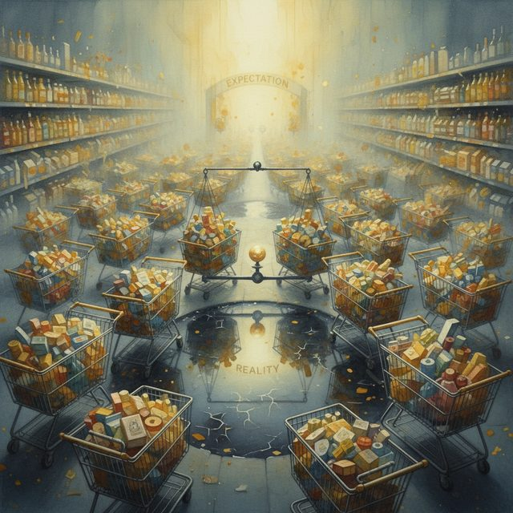
CH02-053
選択肢の多さ／選択疲労のメカニズム／期待と落差の関係／後悔…
CH02-053
選択のパラドックス／自由の整理／時間の損失
CH02-053
目的を明確にする重要性／基準を絞る効果
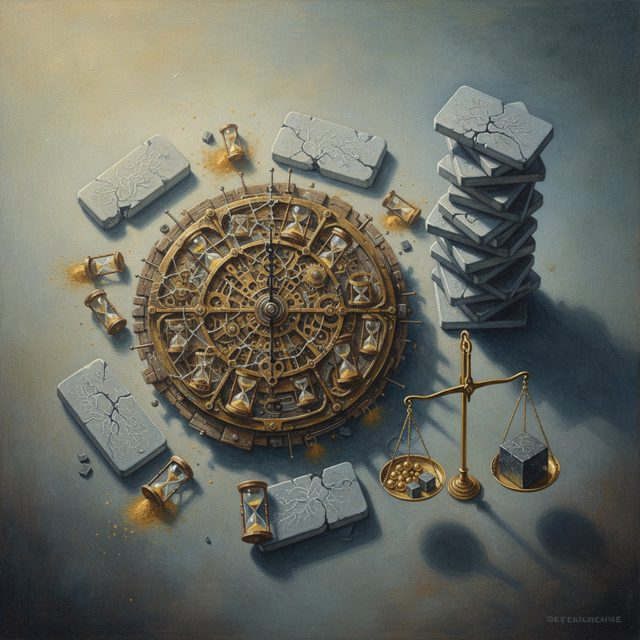
CH02-053
時間枠の効果／決定疲労の蓄積
CH02-053
期待の調整／十分を許す重要性
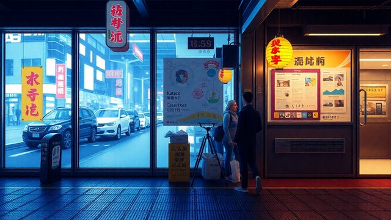
CH02-053
比較の数を減らす／落とす基準の設定
CH02-053
決定の理由を記録／情報収集の時間制限
CH02-053
正解の幻想と現実／整える力の重要性
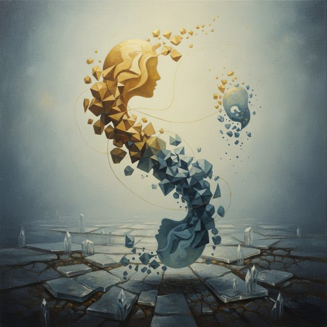
CH02-053
選択が自己の輪郭を描く／疲労時の選択／選択のタイミング
CH02-053
損失回避の本能
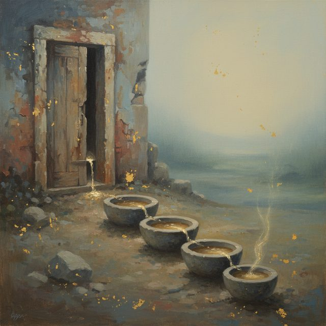
CH02-053
小さく試す方法
CH02-053
他人の評価と自分の目的
CH02-053
選択の順番工夫／直感の活用
CH02-053
豊かさと迷いの関係／過剰な自由を扱う四つの方法／決定疲労の…
CH02-053
習慣の自動化／選択の分離／サンクコストの罠
CH02-053
他人の選択の幻想／自分の基準の重要性
CH02-053
情報源の絞り込み
CH02-053
先送りの負債
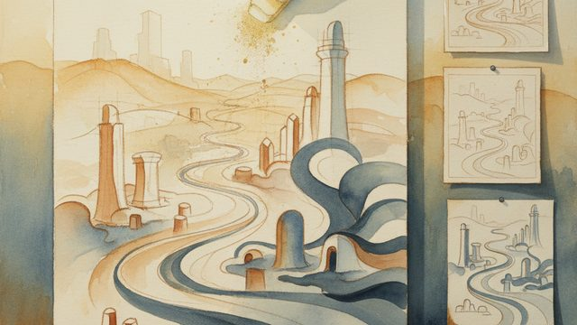
CH02-053
選び直す権利／動いてから調整／適応力の重要性
CH02-053
責任の分散／選ばなかった道の哀惜
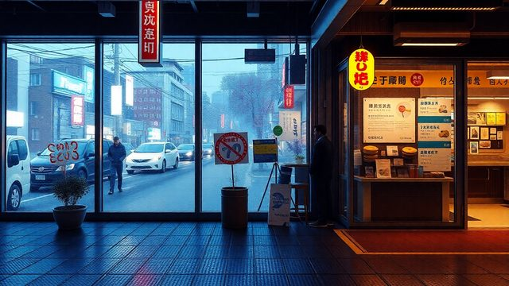
CH02-053
情報の質の選択
CH02-053
選択の連鎖
CH02-053
感情と選択
CH02-053
文化と周囲の期待
CH02-053
短期集中の効果
CH02-053
物理的な整理
CH02-053
やめる選択の重要性
CH02-053
選択を実験と捉える
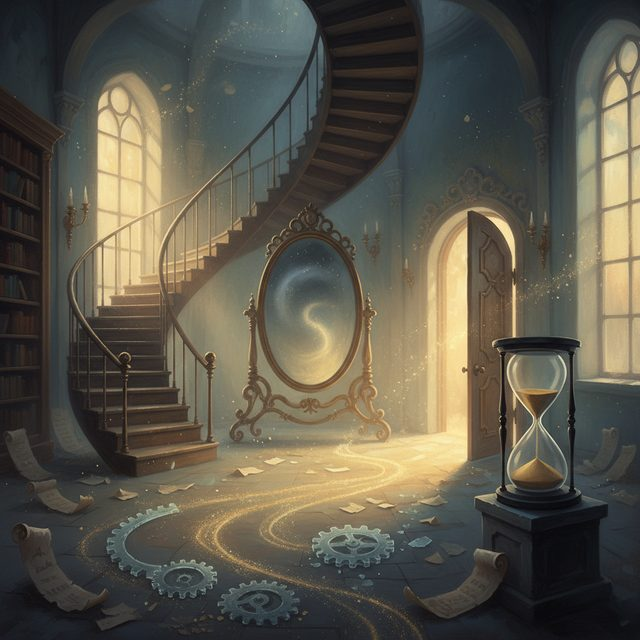
CH02-053
未来の自分との対話
CH02-053
選択のプロセス
CH02-053
情報の流れの制限
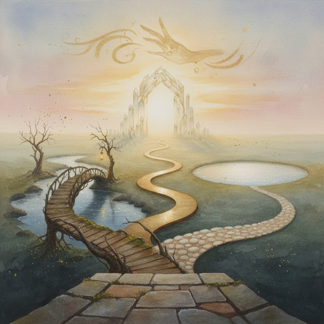
CH02-053
人間関係の選択
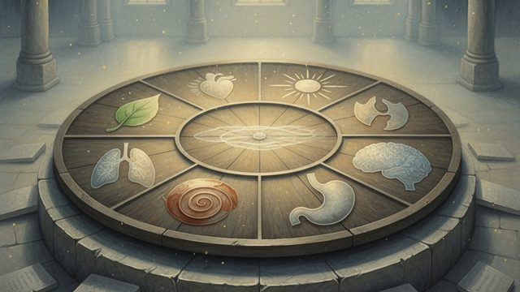
CH02-053
季節のテーマ／体の反応を試す／選択の偏り
CH02-053
選択の感覚の鈍り／言葉を磨く力
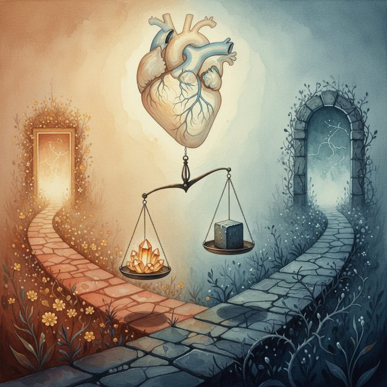
CH02-053
興味を基準に
CH02-053
選択の基本動作／選択の物語性
CH02-053
自由の変容
CH02-053
選択の連鎖
CH02-053
戦略的な保留
CH02-053
旅行先の選び方
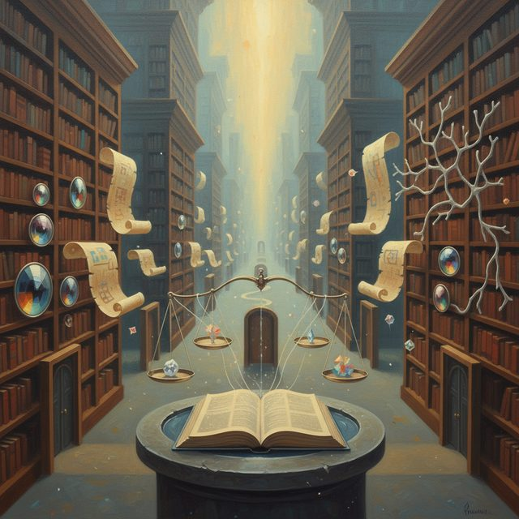
CH02-053
ツールの選び方
CH02-053
人生の大きな選択
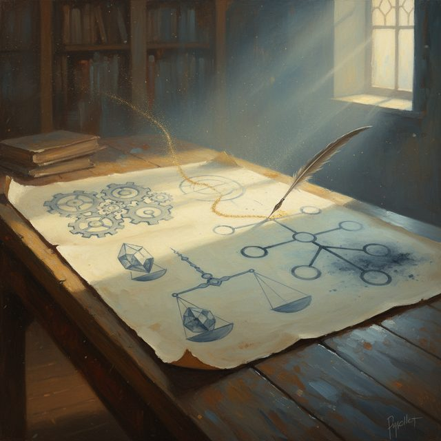
CH02-053
紙に書く効果
CH02-053
迷いの正体の見分け／選択の哲学
CH02-053
小さな選択のトレーニング／選ぶ力の重要性